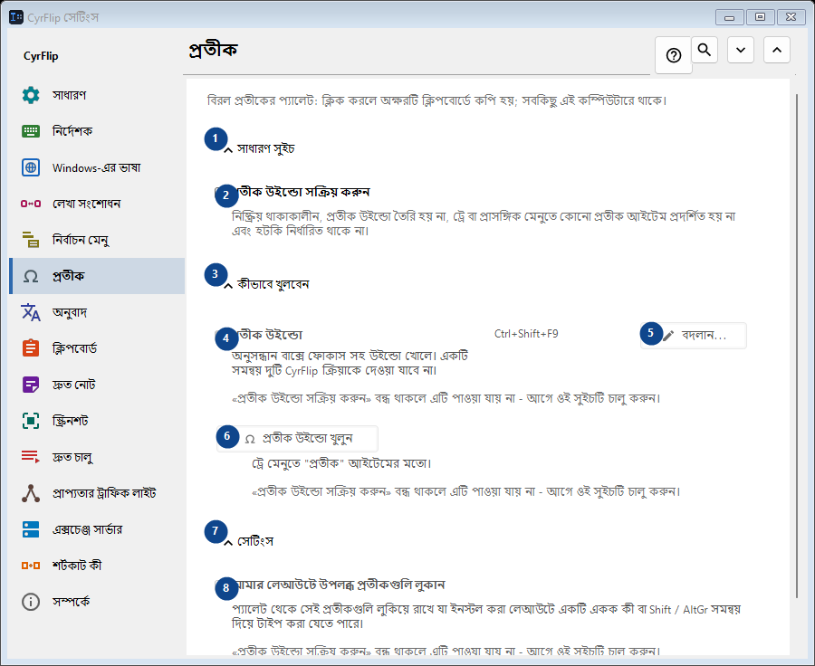
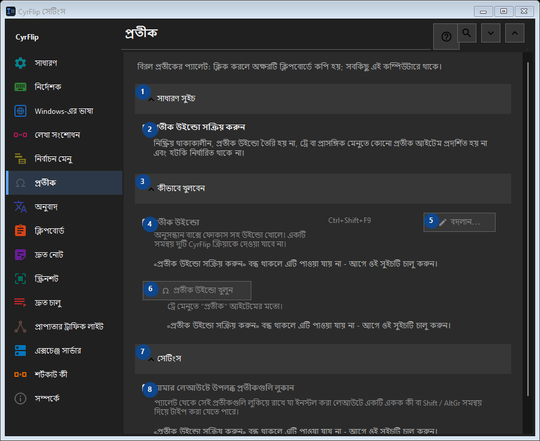

প্রতীক
এর কাজ
বিরল প্রতীকের প্যালেট: ক্লিক করলে অক্ষরটি ক্লিপবোর্ডে কপি হয়; সবকিছু এই কম্পিউটারে থাকে।


ব্যবহারের ক্রম
সেটিং সঙ্গে সঙ্গে প্রয়োগ হয়। নির্দিষ্ট ক্রম নেই; নিচের দলগুলি ব্যবহার করুন।
উপাদান
1. সাধারণ সুইচ
উল্লিখিত কাজের জন্য এই নির্দেশ ব্যবহার করুন। মেনে নেওয়ার আগে নিশ্চিতকরণ পড়ুন।
আপনার শর্টকাট2. প্রতীক উইন্ডো সক্রিয় করুন
নিষ্ক্রিয় থাকাকালীন, প্রতীক উইন্ডো তৈরি হয় না, ট্রে বা প্রাসঙ্গিক মেনুতে কোনো প্রতীক আইটেম প্রদর্শিত হয় না এবং হটকি নির্ধারিত থাকে না।
আপনার শর্টকাট3. কীভাবে খুলবেন
উল্লিখিত কাজের জন্য এই নির্দেশ ব্যবহার করুন। মেনে নেওয়ার আগে নিশ্চিতকরণ পড়ুন।
আপনার শর্টকাট4. প্রতীক উইন্ডো
«প্রতীক উইন্ডো সক্রিয় করুন» বন্ধ থাকলে এটি পাওয়া যায় না - আগে ওই সুইচটি চালু করুন। এই উপাদান এখন উপলব্ধ নয়। আগে বৈশিষ্ট্য চালু করুন বা একটি এন্ট্রি বাছুন।
আপনার শর্টকাট5. বদলান - প্রতীক উইন্ডো
«প্রতীক উইন্ডো সক্রিয় করুন» বন্ধ থাকলে এটি পাওয়া যায় না - আগে ওই সুইচটি চালু করুন। এই উপাদান এখন উপলব্ধ নয়। আগে বৈশিষ্ট্য চালু করুন বা একটি এন্ট্রি বাছুন।
আপনার শর্টকাট6. প্রতীক উইন্ডো খুলুন
«প্রতীক উইন্ডো সক্রিয় করুন» বন্ধ থাকলে এটি পাওয়া যায় না - আগে ওই সুইচটি চালু করুন। এই উপাদান এখন উপলব্ধ নয়। আগে বৈশিষ্ট্য চালু করুন বা একটি এন্ট্রি বাছুন।
আপনার শর্টকাট7. সেটিংস
উল্লিখিত কাজের জন্য এই নির্দেশ ব্যবহার করুন। মেনে নেওয়ার আগে নিশ্চিতকরণ পড়ুন।
আপনার শর্টকাট8. আমার লেআউটে উপলব্ধ প্রতীকগুলি লুকান
«প্রতীক উইন্ডো সক্রিয় করুন» বন্ধ থাকলে এটি পাওয়া যায় না - আগে ওই সুইচটি চালু করুন। এই উপাদান এখন উপলব্ধ নয়। আগে বৈশিষ্ট্য চালু করুন বা একটি এন্ট্রি বাছুন।
আপনার শর্টকাট